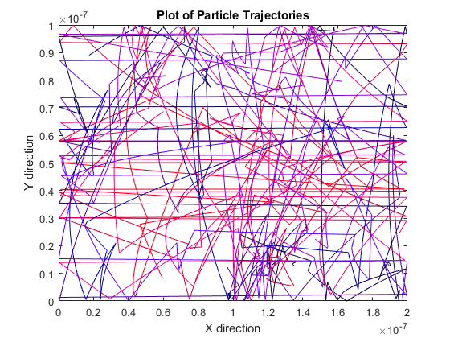
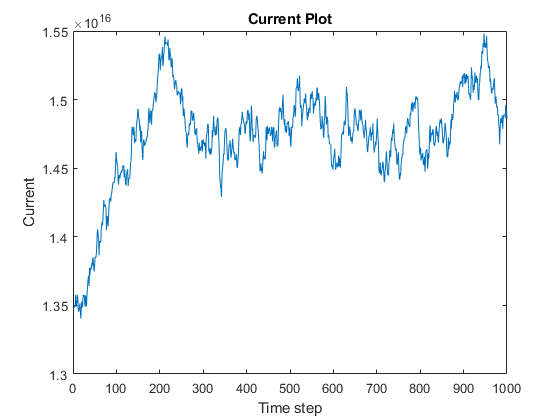
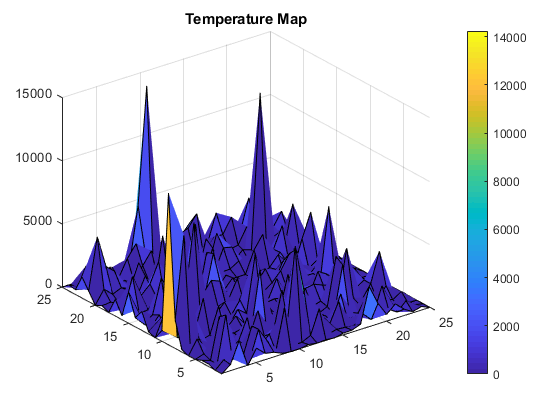
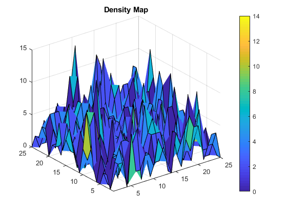

clearvars
clearvars -GLOBAL
close all
global C
global X Y
C.q_0 = 1.60217653e-19;
C.hb = 1.054571596e-34;
C.h = C.hb * 2 * pi;
C.m_0 = 9.10938215e-31;
C.kb = 1.3806504e-23;
C.eps_0 = 8.854187817e-12;
C.mu_0 = 1.2566370614e-6;
C.c = 299792458;
C.g = 9.80665;
mn = 0.26*C.m_0;
Temp = 300;
rTime = 10000;
MTBC = 0.2e-12;
Vleft = 0.1;
electronConc = 10e15;
Vth = sqrt(2*C.kb*Temp/mn);
workX = 200*10^-9;
workY = 100*10^-9;
area = workX*workY;
size = 1000;
displaySize = 10;
X = rand(2,size);
Y = rand(2,size);
Xpos(1,:)= X(1,:)*workX;
Ypos(1,:)= Y(1,:)*workY;
colour = rand(1,displaySize);
Vthn = Vth/sqrt(2);
Xvel = Vthn*randn(1,size);
Yvel = Vthn*randn(1,size);
spacStep = 0.01*workY;
dt = spacStep/Vth;
steps = 1000;
Xvel(1,:) = Xvel(1,:)*dt;
Yvel(1,:) = Yvel(1,:)*dt;
Pscat = 1-exp(-(dt/MTBC));
MFPcount = zeros(1,size);
Efield = Vleft/workX;
force = Efield*C.q_0;
acceleration = force/mn;
accelVelocity = acceleration*(dt^2);
figure(1)
currentHistory = zeros(1,steps);
for i = 1:1:steps
Xvel(:,:) = Xvel(:,:) + accelVelocity;
scattered = rand(1,size);
scatterCheck = scattered <= Pscat;
velocity = Vthn*randn(1,size);
Xvel(scatterCheck) = velocity(scatterCheck)*dt;
velocity = Vthn*randn(1,size);
Yvel(scatterCheck) = velocity(scatterCheck)*dt;
tvelocity = sqrt((Xvel/dt).^2 +(Yvel/dt).^2);
MFPcount(~scatterCheck) = MFPcount(~scatterCheck) + spacStep;
checkXright = Xpos + Xvel > 2e-7;
Xpos(checkXright) = Xpos(checkXright)+ Xvel(checkXright)- workX;
checkXleft = Xpos + Xvel<0;
Xpos(checkXleft) = Xpos(checkXleft) + Xvel(checkXleft) + workX;
leftover = ~(checkXright | checkXleft);
Xpos(leftover) = Xpos(leftover) + Xvel(leftover);
checkY = (Ypos + Yvel > 1e-7 | Ypos + Yvel<0);
Yvel(checkY) = Yvel(checkY).*(-1);
Ypos(1,:) = Ypos(1,:)+ Yvel(1,:);
calcTemp = 0.5*mn*(tvelocity.^2)/(2*C.kb);
averageTemp = sum(calcTemp)/size;
MFP = sum(MFPcount)/size;
avgVel = sum(tvelocity)/size;
mu = (avgVel)/Efield;
currentHistory(i) = C.q_0*electronConc*mu*Efield/area;
prevX(i,:) = Xpos(1,:);
prevY(i,:) = Ypos(1,:);
end
for j = 1:1:displaySize
plot(prevX(:,j),prevY(:,j),'color',[colour(1,j) 0 j/displaySize])
xlim([0 workX])
ylim([0 workY])
hold on
drawnow
end
title('Plot of Particle Trajectories'),xlabel('X direction'),ylabel('Y direction')
hold off
figure(2)
plot(linspace(1,steps,steps),currentHistory)
title('Current Plot')
xlabel('Time step')
ylabel('Current')
disp('Electric Field:')
disp(Efield)
disp('Force')
disp(force)
disp('Acceleration')
disp(acceleration)
disp('current = q*n*mu*E/area')
resX = 25;
resY = 25;
Xedges = linspace(0,workX,resX);
Yedges = linspace(0,workY,resY);
Xbins = discretize(Xpos,Xedges);
Ybins = discretize(Ypos,Yedges);
binTemp = zeros(resX,resY);
for k = 1:1:resX
for L = 1:1:resY
logicX = Xbins == k;
logicY = Ybins == L;
logic = logicX & logicY;
sumX = sum(Xvel(logic))/dt;
sumY = sum(Yvel(logic))/dt;
meanvel = sqrt((sumX)^2+(sumY)^2);
binTemp(k,L) = mn*(meanvel)^2/(2*C.kb);
end
end
figure(3)
surf(binTemp)
xlim([1 resX])
ylim([1 resY])
title('Temperature Map')
colorbar;
resX = 25;
resY = 25;
Xedges = linspace(0,workX,resX);
Yedges = linspace(0,workY,resY);
Xbins = discretize(Xpos,Xedges);
Ybins = discretize(Ypos,Yedges);
binDens = zeros(resX,resY);
for k = 1:1:resX
for L = 1:1:resY
logicX = Xbins == k;
logicY = Ybins == L;
logic = logicX & logicY;
binDens(k,L) = sum(Xbins(logic))/k + sum(Ybins(logic))/L;
end
end
figure(4)
surf(binDens)
title('Density Map')
xlim([1 resX])
ylim([1 resY])
colorbar;
Electric Field:
500000
Force
8.0109e-14
Acceleration
3.3823e+17
current = q*n*mu*E/area
   